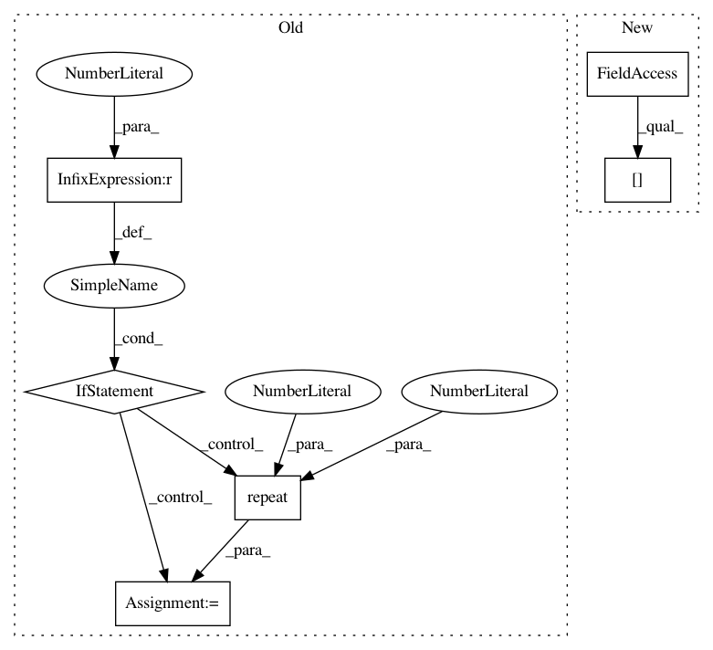

d4e602e3f75b5599f08083d862205dc333a17c3e,gpytorch/kernels/grid_interpolation_kernel.py,GridInterpolationKernel,forward,#GridInterpolationKernel#Any#Any#Any#Any#,144
Before Change
base_lazy_tsr = self._inducing_forward(last_dim_is_batch=last_dim_is_batch, **params)
if last_dim_is_batch:
base_lazy_tsr = base_lazy_tsr.repeat(*x1.shape[:-2], x1.size(-1), 1, 1)
if x1.dim() > 2:
base_lazy_tsr = base_lazy_tsr.repeat(*x1.shape[:-2], 1, 1)
left_interp_indices, left_interp_values = self._compute_grid(x1, last_dim_is_batch)
if torch.equal(x1, x2):
right_interp_indices = left_interp_indices
right_interp_values = left_interp_values
After Change
right_interp_indices, right_interp_values = self._compute_grid(x2, last_dim_is_batch)
batch_shape = _mul_broadcast_shape(
base_lazy_tsr.batch_shape, left_interp_indices.shape[:-2], right_interp_indices.shape[:-2]
)
res = InterpolatedLazyTensor(
base_lazy_tsr.expand(*batch_shape, *base_lazy_tsr.matrix_shape),
left_interp_indices.detach().expand(*batch_shape, *left_interp_indices.shape[-2:]),
In pattern: SUPERPATTERN
Frequency: 4
Non-data size: 6
Instances
Project Name: cornellius-gp/gpytorch
Commit Name: d4e602e3f75b5599f08083d862205dc333a17c3e
Time: 2019-11-25
Author: gpleiss@gmail.com
File Name: gpytorch/kernels/grid_interpolation_kernel.py
Class Name: GridInterpolationKernel
Method Name: forward
Project Name: cornellius-gp/gpytorch
Commit Name: 91b0d220c8e816766fd4565e1d2f5115d3afbefe
Time: 2018-10-12
Author: gpleiss@gmail.com
File Name: gpytorch/lazy/lazy_tensor.py
Class Name: LazyTensor
Method Name: matmul
Project Name: openai/gym
Commit Name: f37830bbe2c85f613fded1721976dbe94f6bed0b
Time: 2019-03-22
Author: martin.delagorce@gmail.com
File Name: gym/utils/play.py
Class Name:
Method Name: play
Project Name: cornellius-gp/gpytorch
Commit Name: aaf2dd66651d04bb8a615ec288155aa28d064abb
Time: 2019-10-24
Author: darbour26@gmail.com
File Name: gpytorch/kernels/index_kernel.py
Class Name: IndexKernel
Method Name: _eval_covar_matrix